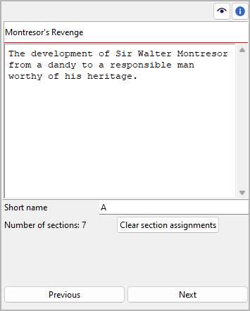
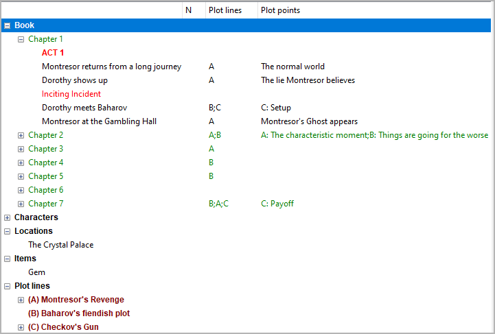

Plotlinieneigenschaften
The Plotlinie properties view opens in the right pane when you select a Plotlinie in the tree.

Titel und Beschreibung
Titel und Beschreibung are displayed in an editable „Karteikarte“.
The editing of the Titel can be completed by pressing the Enter key.
Changes to the description are applied when the mouse is clicked
anywhere outside the text input field.
Kurzname
Be sure to enter a short name to be displayed as a reference in the tree. A single character like „A“, „B“, „C“ is recommended.

Example: Plotlinie short names as displayed in the tree
Abschnittszuordnungen
The number of sections that belong to the selected Plotlinie is shown below the „Kurzname“ entry. The assignments can be made in the section properties view. You can unlink all sections from the selected Plotlinie at once by clicking on the Abschnittszuordnungen löschen Schaltfläche.
Hinweis
A convenient way to manage and keep track of section assignments is offered by the nv_matrix plugin.